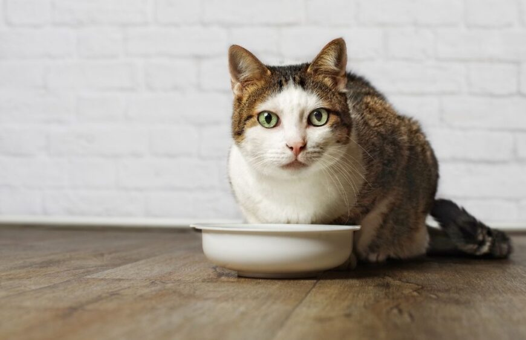

Comida para gatos: ¿qué ingredientes pueden consumir?

A la hora de alimentar a los gatos es importante conocer bien cuáles son sus necesidades básicas. La comida para
gatos siempre está sujeta a tres variables básicas: su edad, tamaño o afecciones. Por ello, es importante
entender que la dieta depende de cada felino.
A la hora de escoger un alimento, es necesario conocer en profundidad las particularidades de cada gato. Esto
permite asegurar que el gato no solo esté recibiendo las cantidades correctas de proteínas, vitaminas y
minerales, sino también que se evite cualquier riesgo.
Dicho esto, antes de brindar cualquier alimento, es importante:
Estar atento ante las alergias. Los gatos pueden ser alérgicos al pescado, a la carne, al pollo y a los lácteos.
Cuando se introduce un nuevo alimento, hay que empezar de a poco. Esto permite estar atento a las molestias
digestivas o al rechazo que produzca el alimento.
- 1. Pescado
-
El pescado cocido y deshuesado es bueno para los gatos en pequeñas cantidades. Aunque la mayoría de los
pescados son adecuados en cantidades del tamaño de un bocado, no hay que abusar de ellos ya que suelen tener
un alto contenido de mercurio y éste puede interferir con sus niveles de vitamina E.
Los suplementos de aceite de pescado también son muy buenos para aquellos gatos que necesitan ayuda a la
hora de mantener su pelaje brillante, suave y sano.
- 2. Huevos
-
Los gatos pueden comer huevos siempre y cuando estén cocinados, ya que esto elimina cualquier enfermedad
alimentaria. Los huevos son una gran fuente de proteínas y vitamina B, por lo que puede ser una gran idea
incluir este ingrediente en su dieta diaria.
- 3. Pollo
-
Lo mejor para los gatos es ofrecerles pollos magros que estén bien cocinados. Pero, por sobre todas las
cosas, es importante quitar los huesos o cualquier otra cosa que pueda provocar un daño al felino.
- 4. Queso
-
A los gatos les gusta el queso. No obstante, no hay que pasarse, ya que el queso y la leche pueden ser
difíciles de digerir para el sistema digestivo de algunos gatos. En general, los gatos pueden comer lácteos
en pequeñas cantidades.
- 5. Algunas frutas y vegetales
-
Algunas frutas y verduras también tienen grandes ventajas para la salud de un gato. Las frutas como las
manzanas, los arándanos, el melón, la piña y las bananas son excelentes ya que proporcionan vitaminas, fibra
y potasio.
Por parte de los vegetales, por ejemplo las zanahorias, la espinaca y la calabaza también son buenas para
incluir en su consumo diario, aunque el beneficio que obtienen de las verduras no es el mismo que nosotros.
Importante: los gatos no deben consumir cerezas, uvas, pasas, limones, limas o pomelos, ya que pueden
provocar malestar estomacal o incluso ser tóxicos.